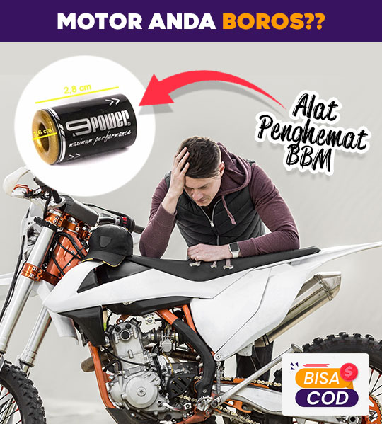

MAGNET PENAMBAH AKSELERASI.
Aksesoris motor untuk menambah akselerasi, speed dan power.
Dijamin!!, motor makin irit BBM.!!
Sudah Tahu Belum??
"..ada magnet yang bisa menambah daya pacu akselerasi motor. Bikin jadi maksimal sistem pembakaran karbu
sehingga
bikin motor Anda lebih hemat BBM .."
".. gak percaya??!!

Alat ini pernah diulas di majalah BIKERSMAGZ
"..Manfaat 9 Power ini bisa merapikan aliran listrik dari koil, dengan api busi yang fokus, pembakaran didalam mesin pun lebih baik ketimbang keadaan standaran.."